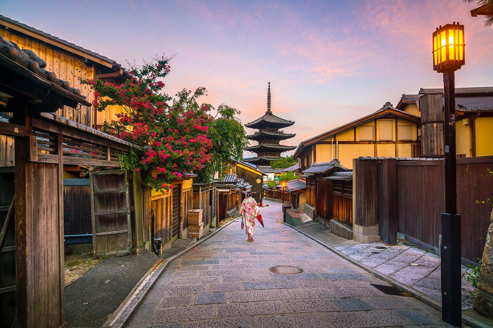

후시미 이나리 신사
붉은 도리이가 이어지는 교토의 대표 명소

JAPAN
전통과 여유가 공존하는 도시,
교토에서 특별한 하루를 만나보세요
전통과 여유가 공존하는 도시, 교토
천년의 역사를 간직한 일본의 교토는 전통문화와 아름다운 사찰, 고즈넉한 거리로 유명한 도시입니다. 계절마다 다른 매력을 선사하며, 일본 특유의 감성과 여유로운 분위기를 느낄 수 있는 특별한 여행지입니다.
교토에서 놓치지 말아야 할 특별한 명소들
교토의 맛과 분위기를 즐길 수 있는 공간들